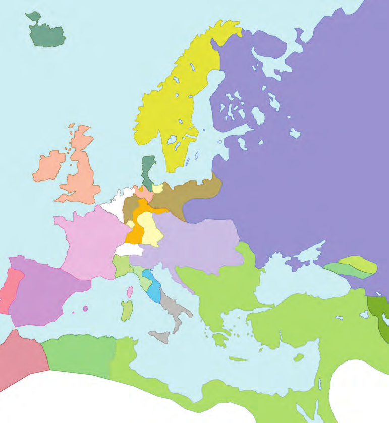

All Chapters
Chapter 1
1CBSE Class 10·History
The Rise of Nationalism in Europe
6 Sections
1 Mock Test
100 Flashcards
21 Figures
Continue learning
Section 2 · The Making of Nationalism in Europe
Resume from Topic 3: What Liberal Nationalism Stood For · about 12 min left in this topic
Your chapter journey
The French Revolution and the Idea of the Nation
✓ Completed
2
The Making of Nationalism in Europe
35%In progress
3
The Age of Revolutions: 1830–1848
Not started
4
The Making of Germany and Italy
Not started
5
Visualising the Nation
Not started
6
Nationalism and Imperialism
Not started
“
When France sneezes, the rest of Europe catches a cold. — Metternich
”
Overview
Section 2
S2Section 2 of 6
The Making of Nationalism in Europe
Before nations existed on any map, aristocrats, merchants and dreamers began imagining them.
What You'll Learn
Mid-18th-century Europe: no nation-states — Germany, Italy and Switzerland were patchworks of kingdoms and duchies
The landed aristocracy vs the new middle class of industrialists and professionals
What liberal nationalism stood for — politically and economically (Zollverein, 1834)
Conservatism after 1815 and the Treaty of Vienna's redrawing of Europe
Secret societies and revolutionaries — Mazzini, Young Italy and Young Europe
Topics
A Patchwork of Kingdoms
Completed
The Aristocracy and the New Middle Class
Completed
What Liberal Nationalism Stood For
Continue →
A New Conservatism after 1815
The Revolutionaries
Practice & Explore
📅
Explore Timeline
5 key events — select a year to read more👆 Select a year above to see what happened
🗺️
Explore Map
Europe after the Congress of Vienna, 1815
"Nations are not made by treaties — they are first imagined."